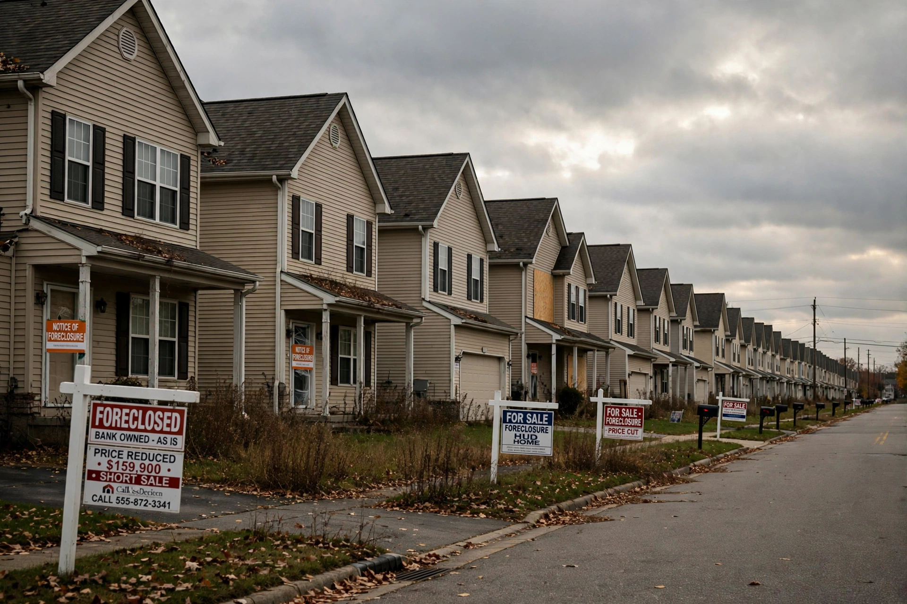

From Wikipedia, the free encyclopedia
| Subprime mortgage crisis | |
|---|---|
 | |
| Period | 2007–2010 |
| Origin | United States housing bubble and subprime lending |
| Consequences | Great Recession; 2008 financial crisis; mass foreclosures |
The subprime mortgage crisis was a multinational financial crisis that occurred between 2007 and 2010, contributing to the 2008 financial crisis and the Great Recession. It was triggered by a large decline in US home prices after the collapse of a housing bubble, leading to mortgage delinquencies, foreclosures and the devaluation of housing-related securities.
In the early 2000s, low interest rates, lax lending standards and financial innovation expanded lending to "subprime" borrowers with poor credit histories, often through adjustable-rate mortgages with low initial "teaser" rates. Lenders securitised the loans as mortgage-backed securities (MBS) and collateralised debt obligations (CDOs), which credit-rating agencies frequently rated as safe. US house prices peaked in 2006; as rates reset higher and prices fell, defaults surged.
In 2007 subprime lenders such as New Century failed; two Bear Stearns hedge funds collapsed, and interbank lending froze in August 2007. In 2008 Bear Stearns was sold to JPMorgan Chase, Fannie Mae and Freddie Mac entered conservatorship, and Lehman Brothers filed for bankruptcy on 15 September 2008, triggering global panic. Governments responded with bailouts (the US TARP, $700 billion), guarantees and central-bank liquidity.
Millions lost homes to foreclosure; US unemployment reached 10% in October 2009. Reforms included the Dodd–Frank Act (2010) and the international Basel III banking standards.